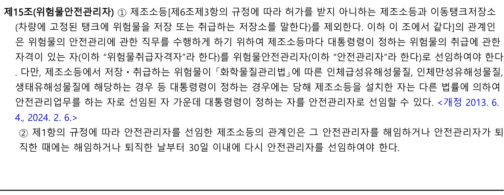
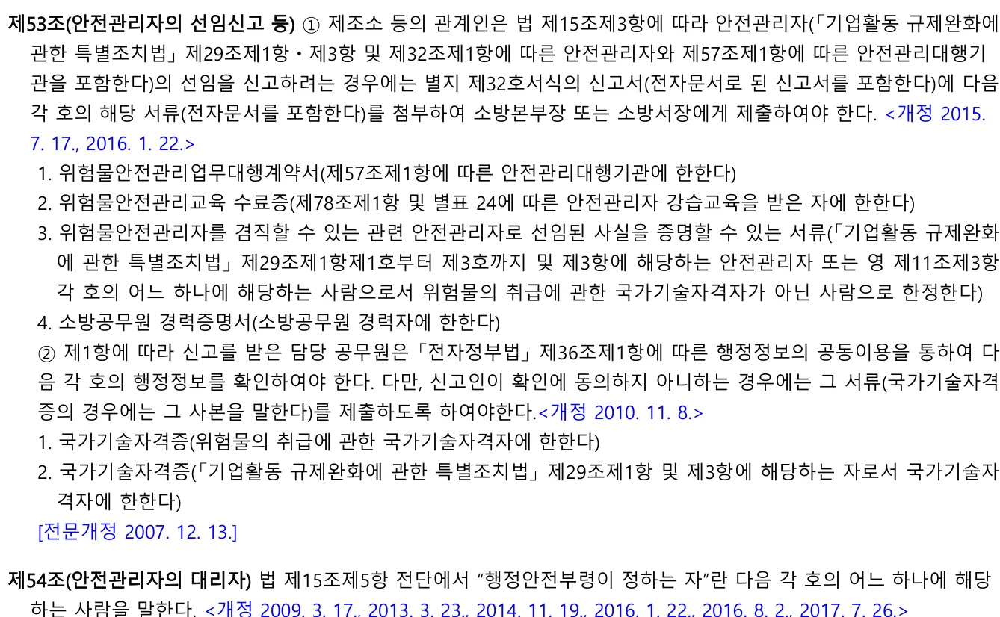
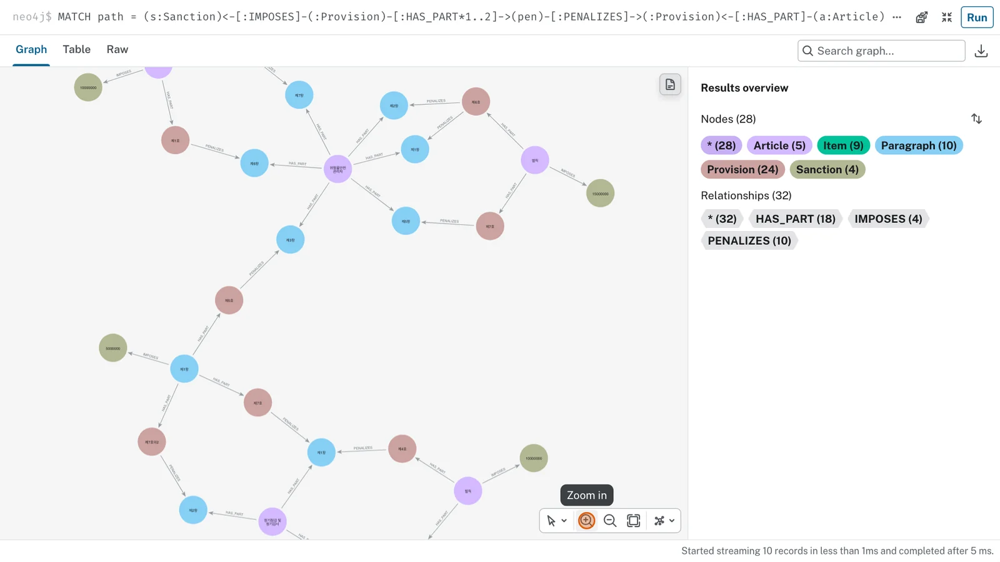

Claude Code에 적재 코드를 맡겨 위험물안전관리법 PDF 3개를 조·항·호·목 노드와 인용·위임·벌칙 관계로 Neo4j에 넣습니다. Windows에서 파이썬 코드가 한글을 안전하게 다루도록 프롬프트에 조건을 더하고, 조 수와 표본 조문을 PDF 원문과 대조한 뒤 오류를 구체적으로 짚어 수정을 요청합니다.
무엇을 · 왜#
5장의 스키마 가운데 구조층·참조층·용어층을 채웁니다. 조문을 나누고 「제N조제M항」 인용을 찾는 작업은 규칙(들여쓰기·정규식)으로 처리하고, LLM은 코드를 작성하는 데만 사용합니다. 따라서 같은 PDF로 다시 실행하면 같은 그래프가 나옵니다. 조문 본문에서 주체와 의무를 뽑는 의미층(Actor·Norm)은 7장에서 다룹니다.
바이브 코딩에서 사람이 맡는 역할은 검증입니다. PDF를 파싱할 때는 띄어쓰기와 줄바꿈이 깨지기 쉬워, 이 장의 절반은 적재 결과를 원문과 대조하는 데 씁니다.
Windows에서 미리 챙길 것#
Windows의 파이썬은 따로 지정하지 않으면 파일을 시스템 코드 페이지(한국어 Windows는 CP949)로 읽고 씁니다. UTF-8로 저장한 JSON을 읽다가 UnicodeDecodeError: 'cp949' codec can't decode …가 나거나, 콘솔 출력의 한글이 깨지는 원인입니다. 두 가지를 해 둡니다.
- 파이썬을 UTF-8 모드로 실행합니다. 3장의
env.ps1이$env:PYTHONUTF8 = '1'을 설정합니다. Claude Code 안에서 Claude가 실행하는 명령도claude를 실행한 창의 환경변수를 물려받으므로,env.ps1을 점 소싱한 창에서claude를 엽니다. - 프롬프트에 조건을 적습니다. 아래 P4에 「파일은 항상
encoding='utf-8'로 열고 경로는pathlib로」라는 줄을 넣었습니다. 코드가 어느 PC에서든 같게 동작하도록 하는 것이 목적입니다.
▶ 작업 창(Windows PowerShell)에 입력
Set-Location C:\lab\law-graph
. .\env.ps1
claude
시작하기 전에
5장에서 schema.md·schema.cypher·golden-questions.md를 커밋했고, Neo4j 창이 떠 있어야 합니다. Claude Code 창 하나와, 확인용 질의를 칠 작업 창(PowerShell, . .\env.ps1 실행) 하나를 함께 씁니다.
따라 하기#
- 적재 코드를 요청합니다(P4). 5장에서 사용한 Claude Code 세션에 이어서 입력합니다(새로 열었다면 위 명령으로 엽니다). 사용할 도구, 파일 두 개의 역할,
MERGE, 비밀번호 처리 방법, Windows 조건, 완료 후 보고할 수치를 적었습니다. 왜 하나요? PDF에서 조·항·호를 나누는 일은 규칙이 많고 지루해 AI에게 맡기기 좋습니다. 대신 사용할 도구, 비밀번호 처리, Windows 인코딩 조건, 보고할 수치를 미리 적어야 원하는 코드가 한 번에 나오고 결과를 검증할 수 있습니다. ▶ Claude Code 입력창에 붙여 넣기좋아. 이제 schema.md 대로 적재 코드를 만들어 줘. - 파이썬은 uv 로 프로젝트를 만들고(python 3.12) PyMuPDF 와 neo4j 드라이버를 써. - parse_law.py: PDF → 조·항·호·목 JSON(data/ 폴더). ingest.py: JSON → Neo4j. MERGE 로 넣어서 다시 돌려도 중복이 없게. - 접속은 bolt://localhost:7687, 사용자 neo4j, 비밀번호는 .env 의 NEO4J_PASSWORD 에서 읽어(코드나 화면에 비밀번호를 쓰지 마). - 이 PC 는 Windows 야. 파일은 항상 encoding='utf-8' 로 열고 쓰고, 경로는 pathlib 로 다뤄. PyMuPDF 는 `import pymupdf` 로 불러(`import fitz` 는 더 이상 권장되지 않아). 나는 PowerShell 에서 `uv run parse_law.py` 처럼 실행할 거야. - 위험물안전관리법 3종(법률·시행령·시행규칙)을 파싱해서 법령별 조·항·호·목 수를 보여 주고 적재해. - 끝나면 레이블별 노드 수, 관계 타입별 수, 걸린 시간을 보여 주고 커밋해 줘. - Claude가 하는 일을 보며 승인합니다. Claude는
uv init --bare --python 3.12와uv add pymupdf neo4j python-dotenv로 프로젝트를 만듭니다.Using CPython 3.12.12가 나오며 파이썬을 받고, 패키지 15개를 10초 안팎에 설치합니다(PyMuPDF 2.2가onnxruntime·numpy등을 함께 받아 약 90MB).--bare는.gitignore를 만들지 않으므로 3장의.gitignore가.env를 지킵니다. 기록에서 Claude는 이어서 짧은 조사 스크립트로 PDF 줄의 x 좌표를 여러 번 측정해 「조 34, 항·호 50, 목 60」이라는 들여쓰기 규칙을 찾았습니다. 모두 읽기 작업이므로 1로 승인합니다. Windows에서는 Claude가 Git Bash로 명령을 실행하므로 승인 창의 명령이uv run python - <<'EOF' …같은 bash 문법으로 보여도 정상입니다. 왜 하나요? 승인 창은 AI가 무엇을 하려는지 사람이 확인하는 유일한 지점입니다. 읽기만 하는 명령인지, 실습 폴더 안에서만 일하는지 보고 승인해야 의도하지 않은 변경을 막을 수 있습니다. - 사람이 직접 수치를 확인합니다. 아래 「원문과 맞춰 보기」의 질의를 Claude Code 창이 아닌 별도의 PowerShell 창에서 실행합니다. Windows용 Claude Code의 셸 명령은 Git Bash로 실행되어 PowerShell 문법(
$env:…,&)이 통하지 않기 때문입니다. 결과를 Claude에게 보여 주려면 출력을 복사해 붙여 넣습니다. 왜 하나요? AI가 보고한 숫자를 그대로 믿지 않고 사람이 직접 그래프를 세어 보아야 검증이 됩니다. AI와 다른 창에서 직접 질의하면 결과를 스스로 판단할 수 있습니다. - 오류를 구체적으로 짚어 수정을 요청합니다(P5). 대조 과정에서 찾은 띄어쓰기 오류 하나의 위치·틀린 글·맞는 글을 명시하고, 수정 후 확인 방법까지 적습니다(아래 3절). 왜 하나요? 「고쳐 줘」만으로는 AI가 무엇을 기준으로 고칠지 모릅니다. 위치·틀린 글·맞는 글·확인 방법을 주면 수정이 정확해지고, 고친 뒤 무엇이 바뀌었는지 수치로 보고받을 수 있습니다.
- 처음부터 다시 실행해 시간을 잽니다. 별도의 PowerShell 창에서 실행합니다.
Measure-Command는 걸린 시간을 재고,| Out-Default는 스크립트 출력도 화면에 보여 줍니다. 왜 하나요? 고친 코드가 처음부터 다시 돌려도 같은 결과를 내는지(재현성) 확인합니다. 걸린 시간은 나중에 법령을 늘릴 때 얼마나 걸릴지 가늠하는 기준이 됩니다. ▶ 작업 창(Windows PowerShell)에 입력Set-Location C:\lab\law-graph . .\env.ps1 (Measure-Command { uv run parse_law.py | Out-Default }).TotalSeconds (Measure-Command { uv run ingest.py | Out-Default }).TotalSeconds
만들어진 파일#
| 파일 | 하는 일 |
|---|---|
pyproject.toml, uv.lock, .python-version |
Python 3.12, 의존성 pymupdf·neo4j·python-dotenv. 실행은 uv run … |
parse_law.py |
PDF → data\<법령>.json. 각 줄의 x 좌표(들여쓰기)로 조·항·호·목을 나누고, 쪽 머리말·꼬리말을 제거하며, 부칙을 제외합니다. 줄바꿈 위치의 띄어쓰기를 추정합니다 |
extract.py |
JSON → 노드·관계 행. 「제N조제M항」 인용을 분석해 REFERS_TO·IMPLEMENTS·PENALIZES·CITES_LAW를, 형량 문구로 Sanction을, 정의·약칭 문형으로 Term·DEFINED_IN·MENTIONS를 만듭니다 |
lawtext.py |
정규화. 키용 norm_key(가운뎃점 7종 → ·, 공백 제거), 전문 색인용 search_text(가운뎃점 → 공백) |
ingest.py |
schema.cypher의 제약·색인을 먼저 적용하고 UNWIND $rows … MERGE로 일괄 적재합니다. --dry-run·--reset·--prune |
data\는 PDF에서 다시 만들 수 있어 3장에서 .gitignore에 넣었습니다. 기록에서 Claude가 작성한 핵심 코드를 발췌하면 다음과 같습니다(실행할 때마다 달라질 수 있습니다).
참고 — Claude가 만든 내용(직접 입력하지 않음)
# parse_law.py — 줄의 들여쓰기(x 좌표, pt)로 단계를 가른다
X_ARTICLE, X_PARA, X_SUB, X_SUBSUB = 34, 50, 60, 73 # 조 · 항/호 · 목 · 세목
…
if near(x, X_PARA) and text[0] in CIRCLED and not busy:
start_paragraph(CIRCLED[text[0]], text[1:], line) # ① ② … → 항
continue
# ingest.py — 행 묶음을 한 번에 MERGE
def merge_nodes(session, label, key, rows, extra_label=""):
query = f"UNWIND $rows AS r MERGE (n:{label} {{{key}: r.{key}}}) SET n += r"
…
def merge_edges(session, kind, rows):
src_label, src_key, dst_label, dst_key = EDGE_ENDS[kind]
query = (f"UNWIND $rows AS r "
f"MATCH (a:{src_label} {{{src_key}: r.src}}) MATCH (b:{dst_label} {{{dst_key}: r.dst}}) "
f"MERGE (a)-[e:{kind}]->(b) SET e += r.props")
코드는 운영체제와 상관없이 같습니다. Windows에서 달라지는 부분은 파일을 여는 open(…, encoding='utf-8')(또는 Path.read_text(encoding='utf-8'))뿐입니다. Claude가 쓴 코드에서 encoding= 없이 open()을 부르는 곳이 있으면 고쳐 달라고 하세요.
실행과 수치#
파싱 출력은 다음과 같아야 합니다(P5까지 반영한 최종 결과 기록).
출력 예시
법령 조 항 호 목 삭제 예정 시행일
위험물안전관리법 시행규칙 82 130 159 47 7 0 2026-07-01
위험물안전관리법 시행령 29 41 96 20 1 0 2026-07-01
위험물안전관리법 46 105 102 0 7 0 2025-08-07
합계 157 276 357 67
「조」에는 삭제된 조가 포함됩니다. 같은 판본의 PDF라면 Claude가 쓴 코드가 조금 달라도 이 표의 조·항·호 수는 같게 나와야 합니다. 다르면 3절처럼 원인을 짚어 다시 요청합니다.
ingest.py가 보고하는 노드·관계 수는 코드에 따라 다릅니다. Provision은 조·항·호·목 수의 합(157+276+357+67 = 857)에 가깝고, Law에는 적재한 3개 외에 조문이 인용한 다른 법령(예: 「소방기본법」)의 껍데기 노드가 함께 생깁니다. 정확한 수는 코드와 판본에 따라 다르므로, 보고된 숫자를 아래 질의로 다시 세어 서로 맞는지 확인하는 것이 중요합니다.
원문과 맞춰 보기#
cypher-shell에 한글이 들어간 질의를 넘길 때는 4장처럼 Write-Utf8로 저장해 -f로 실행합니다. 아래 명령을 env.ps1을 점 소싱한 별도의 PowerShell 창에서 실행합니다.
1. 조 수#
▶ 작업 창(Windows PowerShell)에 입력
Set-Location C:\lab\law-graph
. .\env.ps1
Write-Utf8 check-articles.cypher @'
MATCH (l:Law {inCorpus:true})-[:HAS_ARTICLE]->(a:Article)
WHERE a.isCurrent AND a.status <> '삭제'
RETURN l.lawId AS 법령, count(a) AS 현행조수 ORDER BY 법령;
'@
& $cs -u neo4j -p $env:NEO4J_PASSWORD --format plain -f check-articles.cypher
출력 예시
법령, 현행조수
"위험물안전관리법", 46
"위험물안전관리법 시행규칙", 82
"위험물안전관리법 시행령", 29
기록에서는 PyMuPDF로 추출한 텍스트에서 제N조(·제N조 삭제로 시작하는 줄을 부칙 앞까지 모아 그래프의 현행 조 번호 집합과 비교했고, 빠진 조 0, 남는 조 0이었습니다. 이 확인도 Claude에게 맡길 수 있습니다. 「PDF에서 현행 조 번호 목록을 따로 뽑아 그래프의 조 번호 집합과 비교해서 빠진 조와 남는 조를 보여 줘」라고 요청하세요.
2. 표본 조문 세 개#
조 수가 맞아도 조 안의 항·호가 틀릴 수 있습니다. 구조가 서로 다른 세 조문을 골라 확인합니다.
▶ 작업 창(Windows PowerShell)에 입력
Write-Utf8 check-samples.cypher @'
MATCH (a:Article)
WHERE a.pid IN ['위험물안전관리법:제15조', '위험물안전관리법 시행령:제21조', '위험물안전관리법 시행규칙:제53조']
OPTIONAL MATCH (a)-[:HAS_PART]->(p)
WITH a, p ORDER BY p.order
RETURN a.pid AS 조, a.text AS 머리글, collect(p.label) AS 항호;
'@
& $cs -u neo4j -p $env:NEO4J_PASSWORD --format plain -f check-samples.cypher
출력 예시
조, 머리글, 항호
"위험물안전관리법:제15조", "", ["제1항", "제2항", "제3항", "제4항", "제5항", "제6항", "제7항", "제8항", "제9항"]
"위험물안전관리법 시행령:제21조", "시ㆍ도지사는 법 제30조제1항에 따라 다음 각 호의 권한을 소방서장에게 위임한다. 다만, 동일한시ㆍ도에 있는 둘 이상의 소방서장의 관할구역에 걸쳐 설치되는 이송취급소에 관련된 권한을 제외한다.", ["제1호", "제2호", "제3호", "제4호", "제5호", "제6호", "제7호", "제7호의2", "제7호의3", "제8호", "제9호", "제10호", "제11호", "제12호"]
"위험물안전관리법 시행규칙:제53조", "", ["제1항", "제2항"]
pid와 label 같은 속성 이름은 5장 설계를 따른 것입니다. Claude가 다른 이름을 썼다면 schema.md를 보고 질의의 속성 이름을 바꿉니다.



| 조문 | 그래프 | 판정 | |
|---|---|---|---|
| 법 제15조 | 항 9개, 호 없음 | 항 9개 | 맞음. 제2항·제3항 본문 글자도 일치 |
| 시행령 제21조 | 항 없이 호 14개(1~7, 7의2, 7의3, 8~12) | 같음 | 구조는 맞음. 머리글 「동일한시ㆍ도에」는 틀림(원문 「동일한 시ㆍ도에」) |
| 시행규칙 제53조 | ①에 호 4개, ②에 호 2개 | 항 2개 | 맞음. ②의 「하여야한다」는 원문 그대로 |
PDF에서 「동일한」으로 줄이 끝나고 다음 줄이 「시ㆍ도에」로 시작하는 자리라, 첫 버전 코드는 띄울 근거를 찾지 못하고 붙였습니다. 검색에는 영향이 없지만(전문 색인은 두 글자씩, 용어 키는 공백을 빼고 비교) 답변에는 잘못된 원문이 인용됩니다. 여러분의 코드에서는 다른 자리가 틀릴 수도 있으니 세 조문 모두 PDF와 직접 비교하세요.
3. 오류를 구체적으로 짚어 수정 요청하기(P5)#
「띄어쓰기 고쳐 줘」 대신 어디가 · 어떻게 틀렸고 · 맞는 글은 무엇이며 · 고친 뒤 무엇으로 확인할지를 적습니다.
▶ Claude Code 입력창에 붙여 넣기
시행령 제21조 머리글이 「동일한시ㆍ도에」로 붙었어. PDF 원문은 「동일한 시ㆍ도에」야. 줄바꿈 자리 띄어쓰기 규칙을 고쳐 줘.
고친 뒤 위험물안전관리법 3종에서 줄바꿈 자리 판정이 바뀐 곳의 개수와 예를 보여 주고, 법 제15조·시행령 제21조·시행규칙 제53조 본문을 PDF 와 다시 대조해. 다시 적재해서 노드·관계 수가 그대로인지 확인하고 커밋해 줘.
기록에 남은 보고 요지는 다음과 같습니다.
- 띄어쓰기 판단 근거 네 가지를 추가했습니다: 어절 끝(앞줄이 조사·어미로 끝남, 「동일한|시ㆍ도에」), 인용 표기 뒤(「제11조제3항|각」), 닫는 낫표 뒤, 여는 따옴표 앞. 「부과|권자」처럼 조사와 같은 글자로 끝나는 명사는 예외로 두었습니다.
- 위험물안전관리법 3종의 줄바꿈 자리 692곳 중 25곳이 붙임 → 띄움으로 바뀌었고, 하나씩 읽어 모두 맞다고 판정했습니다.
- 세 조문에서 공백을 제외한 글자 수가 PDF와 1,167/1,167 · 567/567 · 674/674로 일치했습니다.
- 규칙으로 판단하지 못해 붙여 둔 위치는 여전히 약 9%입니다.
4. 다시 실행해도 중복이 없는지 — 그리고 남는 기존 데이터#
띄어쓰기가 고쳐지면 「(이하“위험물운반자”라 한다)」처럼 붙어 있던 약칭이 새로 Term으로 생기고, MENTIONS 관계 일부가 늘거나 줄어 노드·관계 수가 조금 바뀝니다(기록: Term 4개 증가, MENTIONS 21개 증가·7개 감소).
이때 줄어야 할 관계가 DB에 그대로 남습니다. MERGE는 이미 있으면 유지하고 없으면 추가하기만 하므로 다시 실행해도 중복은 생기지 않지만, 이번 추출에서 빠진 기존 노드·관계를 지우지는 않습니다. 기록에서 Claude는 ingest.py에 --prune(이번 추출에 없는 항목 삭제)을 더했습니다. 삭제 명령이므로 승인 전에 코드를 읽고 1을 고릅니다.
명령(PowerShell, C:\lab\law-graph) |
쓰는 때 |
|---|---|
uv run ingest.py |
일반적인 적재. 다시 실행해도 중복이 생기지 않습니다 |
uv run ingest.py --prune |
추출 규칙을 수정한 뒤 기존 데이터를 정리합니다. data\에 3개 법령이 모두 있을 때만(없는 법령의 노드도 지움) |
uv run ingest.py --reset |
이 스크립트의 레이블이 붙은 노드를 모두 지우고 처음부터 적재합니다 |
uv run ingest.py --dry-run |
DB에 쓰지 않고 추출한 개수만 확인합니다 |
중복이 없는지는 같은 명령을 두 번 실행해 노드·관계 수가 같은지로 확인합니다.
▶ 작업 창(Windows PowerShell)에 입력
Write-Utf8 check-total.cypher @'
MATCH (n) WITH count(n) AS 노드 MATCH ()-[r]->() RETURN 노드, count(r) AS 관계;
'@
uv run ingest.py | Out-Null; & $cs -u neo4j -p $env:NEO4J_PASSWORD --format plain -f check-total.cypher
uv run ingest.py | Out-Null; & $cs -u neo4j -p $env:NEO4J_PASSWORD --format plain -f check-total.cypher
두 번의 출력이 같으면 됩니다.
5. 시행 예정 조문#
국가법령정보센터 PDF에는 시행일이 다른 판본이 같은 문서에 함께 실리기도 합니다. 현행 조문 뒤에 [시행일: …]이 붙은 같은 번호의 조문이 한 번 더 나오는 경우입니다. 이 교재의 판본(시작하기의 표)에서는 위험물안전관리법 3종에 없었습니다. 그래도 나중에 받은 판본에는 생길 수 있으므로, 파서가 그런 조문의 pid 끝에 @시행일을 붙여 따로 적재하고 isCurrent=false로 표시하는지 확인해 둡니다.
▶ Neo4j Browser(http://localhost:7474)에 붙여 넣기 — 작업 창에서 Write-Utf8로 파일에 저장해 & $cs … -f 파일로 실행해도 됩니다
MATCH (a:Article) WHERE NOT a.isCurrent RETURN a.pid AS 조, a.effectiveFrom AS 시행일 ORDER BY 조
시작하기의 판본이라면 결과는 0행입니다.
확인 — Neo4j Browser로 보기#
CALL db.schema.visualization()으로 실제로 적재된 스키마를 확인합니다. 레이블 9개(Provision·Article·Paragraph·Item·SubItem·Law·Annex·Sanction·Term)와 관계 타입이 보이면 됩니다. 노드가 많아 그래프가 빽빽하면 결과 칸을 전체 화면으로 키우고 「Zoom to fit」을 누릅니다.
레이블·관계 타입별 개수를 세어 ingest.py의 보고와 맞춰 봅니다.
▶ Neo4j Browser(http://localhost:7474)에 붙여 넣기 — 작업 창에서 Write-Utf8로 파일에 저장해 & $cs … -f 파일로 실행해도 됩니다
MATCH (n) UNWIND labels(n) AS 레이블 RETURN 레이블, count(*) AS 노드수 ORDER BY 노드수 DESC
▶ Neo4j Browser(http://localhost:7474)에 붙여 넣기 — 작업 창에서 Write-Utf8로 파일에 저장해 & $cs … -f 파일로 실행해도 됩니다
MATCH ()-[r]->() RETURN type(r) AS 관계, count(*) AS 수 ORDER BY 수 DESC
제15조와 그 항을 가리키는 하위법령·벌칙 조문을 함께 그려 봅니다.
▶ Neo4j Browser(http://localhost:7474)에 붙여 넣기 — 작업 창에서 Write-Utf8로 파일에 저장해 & $cs … -f 파일로 실행해도 됩니다
MATCH (l:Law {lawId:'위험물안전관리법'})-[ha:HAS_ARTICLE]->(a:Article {pid:'위험물안전관리법:제15조'})-[h:HAS_PART]->(p:Paragraph)
OPTIONAL MATCH (pen:Provision)-[pz:PENALIZES]->(p)
OPTIONAL MATCH (low:Provision)-[im:IMPLEMENTS]->(p)
RETURN l, ha, a, h, p, pen, pz, low, im

이 그림은 위험물안전관리법 3종 안에서만 이어지므로, 법령을 하나로 줄인 이 교재에서도 같은 노드 26 · 관계 26이 나와야 합니다.
골든 퀘스천 5번의 경로인 「제재 ← 벌칙 조·항 → 벌칙 호 → 의무 항 ← 조」를 한 번에 그립니다.
▶ Neo4j Browser(http://localhost:7474)에 붙여 넣기 — 작업 창에서 Write-Utf8로 파일에 저장해 & $cs … -f 파일로 실행해도 됩니다
MATCH path = (s:Sanction)<-[:IMPOSES]-(:Provision)-[:HAS_PART*1..2]->(pen)-[:PENALIZES]->(:Provision)<-[:HAS_PART]-(a:Article)
WHERE a.pid IN ['위험물안전관리법:제15조', '위험물안전관리법:제18조']
RETURN path

같은 패턴의 결과를 테이블로 조회하면(RETURN p.citation AS 의무조항, pen.citation AS 벌칙조항, s.text AS 제재 ORDER BY p.order) 10행이 나옵니다. 제35조~제39조 원문과 10건 모두 일치해야 합니다.

막히면
UnicodeDecodeError: 'cp949' codec can't decode byte …가 납니다
- 원인: 파이썬이 UTF-8 파일(JSON·
schema.cypher)을 시스템 코드 페이지(CP949)로 읽었습니다. - 조치:
. .\env.ps1을 실행한 창에서 다시 실행하고(PYTHONUTF8=1), Claude에게 「모든 open() 에 encoding='utf-8' 을 넣어 줘」라고 요청합니다.
FutureWarning: The fitz API is deprecated가 보입니다
- 원인: PyMuPDF 2.x에서 옛 이름
import fitz가 권장되지 않게 되었습니다(동작은 합니다). - 조치: 「import fitz 를 import pymupdf 로 바꿔 줘」라고 요청합니다.
cypher-shell 결과의 한글이 ?나 깨진 글자로 나옵니다
- 원인: 콘솔·자바·파이썬의 인코딩 설정이 서로 어긋났습니다. 콘솔만 UTF-8로 바꾸고
JAVA_OPTS를 빼면 오히려�가 나옵니다. - 조치: 새 창에서
. .\env.ps1로 네 설정을 한꺼번에 적용하고, 질의는Write-Utf8로 저장한 파일을-f로 넘깁니다.
적재한 조문의 띄어쓰기가 PDF와 다릅니다
- 원인: PDF에서 낱말 사이에 줄바꿈이 있는 위치는 띄울지 붙일지 판단할 정보가 없습니다.
- 조치: 틀린 위치·글·정답과 확인 방법을 적어 다시 요청(위 P5) →
uv run parse_law.py; uv run ingest.py --prune.
다시 적재했는데 없어져야 할 관계가 남아 있습니다
- 원인:
MERGE는 추가만 합니다. - 조치:
uv run ingest.py --prune(data\에 3개 법령이 모두 있을 때만). 처음부터 다시 하려면uv run ingest.py --reset.
「도지사」로 찾으면 조문이 1건만 나옵니다
- 원인: 전문 색인(Lucene)이 「·」를 낱말을 잇는 글자로 보아 「시·도지사」를 한 낱말로 묶습니다.
- 조치: 전문 색인용 글(
normText·searchText)은 가운뎃점을 공백으로 바꾸고, 용어 키(normName·normKeys)만 「·」로 통일합니다.
명령 두 개를 이어 쓸 때는 ;를 씁니다. &&(앞 명령이 성공했을 때만 다음 명령)는 PowerShell 7에서는 되지만 Windows PowerShell 5.1에서는 오류이므로, 이 교재는 ;로 통일했습니다.
정리와 다음 장#
이 장에서 한 일
| 한 일 | 어디서 | 결과물 |
|---|---|---|
| 적재 코드 요청(P4)과 실행 승인 | Claude Code 입력창 | uv 프로젝트, 파서·적재 스크립트 |
| 조·항·호·목 수와 표본 조문을 원문과 대조 | 작업 창(& $cs -f) / Neo4j Browser |
조 157 · 항 276 · 호 357 · 목 67 |
| 틀린 곳을 구체적으로 짚어 수정 요청(P5) | Claude Code 입력창 | 고쳐진 적재 코드 |
| 처음부터 다시 실행해 중복이 없는지 확인 | 작업 창 | 두 번 실행해도 같은 수치 |
왜 중요한가요? 이후 모든 답은 이 그래프에서 나옵니다. 적재가 틀리면 Claude가 아무리 질의를 잘 써도 답이 틀립니다. 「Claude가 다 했다」가 아니라 「원문과 맞는지 사람이 확인했다」가 이 장의 완료 조건입니다.
다음 장(7장)에서 할 일: 조문 속 「관계인」「소방서장」 같은 행위자(Actor) 이름을 LLM으로 뽑아, 같은 대상을 가리키는 다른 이름을 하나로 합치는 의미층을 만듭니다. 주로 Claude Code 입력창에서 진행합니다.
확인 문제#
조 수가 PDF와 같으면 적재가 맞았다고 볼 수 있나요?
아닙니다. 조 수는 맞아도 조 안의 항·호 구조나 글자가 틀릴 수 있습니다. 구조가 다른 표본 세 개(항만 있는 조, 항 없이 호만 있는 조, 항 아래 호가 있는 조)를 PDF와 맞춰 보아야 조 수만으로는 드러나지 않는 띄어쓰기 오류를 찾을 수 있습니다.
Windows에서 P4 프롬프트에 「encoding='utf-8'」 조건을 넣은 이유는 무엇인가요?
Windows의 파이썬은 인코딩을 지정하지 않으면 시스템 코드 페이지(한국어 Windows는 CP949)로 파일을 읽고 씁니다. UTF-8로 저장된 JSON·Cypher 파일을 읽다가 UnicodeDecodeError가 나거나 한글이 깨지므로, 코드에서 항상 UTF-8을 명시하게 했습니다. PYTHONUTF8=1은 이를 실행 환경 쪽에서 한 번 더 막는 장치입니다.
cypher-shell에 한글 질의를 넘길 때 파이프 대신 -f 파일을 쓰는 까닭은 무엇인가요?
PowerShell이 외부 프로그램으로 파이프를 넘길 때는 $OutputEncoding에 따라 글자를 다시 인코딩하고(5.1의 기본값은 ASCII라 한글이 ?가 됩니다), 배치 파일 인자는 cmd를 한 번 더 거치며 큰따옴표가 사라집니다. BOM 없는 UTF-8 파일을 -f로 넘기면 cypher-shell이 파일을 직접 읽으므로 이런 변환이 없습니다.
MERGE로 적재하면 다시 돌려도 안전한데, --prune은 왜 따로 필요한가요?
MERGE는 이미 있는 것은 두고 없는 것만 더하므로 중복은 생기지 않지만, 규칙을 고쳐 이번 추출에서 사라진 노드·관계를 지우지는 않습니다. 이런 기존 데이터를 지우는 옵션이 --prune입니다.